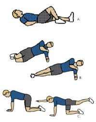

News & Views
-
VideoIs It Safe To Adjust a Child's SpineThe question of safety can be answered in several ways...
-
FitnessMcGill's Big Three 
-
Mind & BodyMindful MeditationUnderstanding the benefits of meditation
-
FitnessPilates, The Perfect Complement To Chiropractic CareSimple exercises to do at home
-
Featured ChiropractorDr. Brian GleberzonChiropractor, researcher, technique instructor and OCA Board Member...
-
FoodShop Smart For Organic ProduceThe dirty dozen, the clean fifteen
-
Food & Drink5 DIY Sports Drinks to Help Keep You HydratedMany formulas are loaded with sugar and dyes. Try these natural options
-
Mind & BodyThe Weird Reason Some People Are Allergic to Fruits and VeggiesOral allergy syndrome can cause reactions in people with environmental allergies
-
Food5 Things You Should Know About The Bulletproof DietThe eating philosophy from the creator of Bulletproof Coffee
-
FitnessOptimizing Your Sport Performance With Chiropractic CareA chemical-free way to improve your game
It’s time to Straighten Up and improve your spinal health! To download the CCA’s new free app, click below:

Newsletter
Get information about healthy living, Chiropractic and a whole lote more.Name
E-Mail